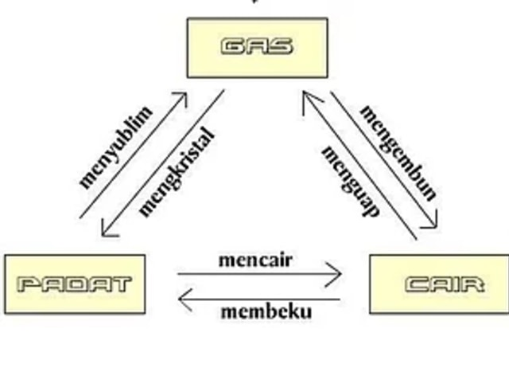

Bab 3 Klasifikasi Materi dan Perubahannya
A. Cara Mengklasifikasikan Materi
Saat kita mengumpulkan berbagai kelompok sesuai dengan sifatnya, maka kita akan menemukan bahwa ada beberapa langkah untuk klasifikasi materi yaitu:
- Mengamati karakteristik dari benda tersebut
- Mencatat berbagai persamaan dan perbedaan sifat masing-masing benda
- Mengelompokkan berbagai benda tersebut kedalam satu kelompok sesuai dengan kesamaan sifat
- Memberikan nama kepada benda tersebut sesuai kelompoknya
Berdasarkan wujudnya materi dapat dikelompokkan menjadi 3, yaitu zat padat, cair, dan gas.
Perbedaan Sifat Zat Padat, Cair dan Gas
| Padat | Cair | Gas |
|---|---|---|
|
Mempunyai bentuk dan volume tertentu. |
Mempunyai volume tertentu, akan tetapi tidak mempunyai bentuk yang tetap, sesuai dengan pada media yang digunakan. |
Tidak mempunyai volume dan bentuk yang pasti. |
|
Jarak antarpartikel zat padat sangat rapat. |
Jarak antarpartikel zat cair lebih renggang. |
Jarak antarpartikel gas sangat renggang. |
|
Partikel-pertikel zat padat tidak dapat bergerak bebas. |
Partikel-pertikel zat cair dapat bergerak bebas, namun geraknya terbatas. |
Partikel-partikel gas dapat bergerak dengan sangat bebas. |
B. Cara Memisahkan Campuran
Beberapa metode pemisahan campuran yang banyak digunakan antara lain penyaringan (filtrasi), sentrifugasi, sublimasi, kromatografi, dan distilasi. Berikut penjelasannya:
-
Penyaringan(Filtrasi)
Penyaringan adalah suatu metode pemisahan zat campuran yang digunakan untuk memisahkan antara cairan dan padatan, dimana tidak bisa larut sesuai pada perbedaan ukuran partikel beberapa yang bercampur didalamnya.
-
Sentrifugasi
Jenis motode yang satu ini sering dilakukan sebagai pengganti filtrasi apabila partikel padatan yang terdapat dalam campuran mempunyai ukuran sangat halus dan campurannya berjumlah jauh lebih sedikit.. Metode sentrifugasi sendiri digunakan untuk bisa memisahkan sel-sel darah merah dan sel-sel darah putih dari plasma darah. Dalam hal ini, padatan adalah beberapa sel darah merah dan sel-sel darah putih yang akan mengumpul di dasar tabung reaksi, sedangkan plasma darah terdiri dari berupa cairan yang berada di bagian atas.
-
Distilasi (Penyulingan)
Pemisahan campuran dengan cara distilasi (penyulingan) pada umumnya banyak digunakan dalam kehidupan sehari-hari maupun dalam kegiatan industri. Pemisahan campuran dengan cara penyulingan ini dapat digunakan untuk memisahkan suatu zat cair dari campurannya. Prinsip cara kerjanya didasarkan pada perbedaan titik didih dari zat cair yang bercampur, sehingga saat menguap setiap zat akan terpisah dengan sendirinya.
-
Kromatografi
Kromatografi merupakan suatu metode pemisahan campuran yang dasarnya adalah pada perbedaan kecepatan merambat antara beberapa partikel yang bercampur dalam suatu medium diam pada saat dialiri oleh suatu medium gerak. Pada umumnya pemisahan campuran dengan cara kromatografi digunakan untuk mengidentifikasi suatu zat yang berada dalam suatu campuran. Prinsip kerja kromatografi sendiri didasarkan pada perbedaan kecepatan merambat antara setiap partikel zat yang bercampur dalam suatu medium yang diam ketika dialiri suatu medium gerak.
-
Sublimasi
Prinsip kerja metode pemisahan campuran dengan cara sublimasi sendiri biasanya didasarkan pada campuran zat yang mempunyai satu zat yang dapat menyublim (perubahan wujud padat ke wujud gas) sedangkan zat yang lainnya tidak dapat menyublim.
C. Benda-benda yang dapat mengalami perubahan
Benda-Benda yang dapat berubah wujud:
- Padat
- Cair
- Gas
Perubahan wujud benda merupakan proses dimana suatu benda berubah wujud. Selama ini kita tidak kaget dengan perubahan tersebut, namun dalam artikel ini akan diulas sebutan dari masing-masing perubahan bentuk benda tersebut.
Berikut beberapa peristiwa perubahan wujud benda beserta contohnya.
-
Menyublim
Perubahan wujud benda dari padat ke gas disebut menyublim, contohnya yaitu, kapur barus yang dibiarkan terletak di ruangan ataupun lemari, lama kelamaan akan habis, hal ini dikarenakan kapur barus yang tadinya berbentuk padat berubah wujudnya menjadi gas yang melebur bersama udara, sehingga aroma ruangan atau lemari akan menjadi wangi.
-
Mencair
Mencair merupakan perubahan wujud benda dari padat ke cair, contohnya yaitu, es batu yang dibiarkan begitu saja di suhu ruangan akan mencair, atau bisa juga mentega yang dipanaskan diatas wajan yang berubah bentuk dari padan ke cair.
-
Membeku
Perubahan wujud dari cair ke padat disebut membeku, contohnya yaitu, air yang dimasukan ke dalam freezer akan berubah bentuk menjadi padat atau es batu, hal ini dikarenakan perubahan suhu yang dialami oleh air tersebut hingga terjadilah perubahan bentuk
-
Mengembun
Membeku merupakan perubahan wujud benda dari gas ke cair. Contohnya yaitu, embun di pagi hari akan jatuh sebagai titik-titik air di ujung dedaunan. Pada awalnya bentuk embun berupa gas, namun karena perubahan suhu udara embun berubah menjadi titik titik air.
-
Menguap
Menguap yaitu perubahan wujud benda dari cair menjadi gas, contohnya yaitu bensin yang merupakan benda cair yang ada di dalam tangki kendaraan akan berubah menjadi gas ketika tengki kendaraan memiliki suhu udara yang panas.
-
Mengkristal
Perubahan wujud benda mengkristal hampir sama dengan membeku, yaitu perubahan benda cair ke benda padat. Namun yang membedakan adalah penyebab perubahan benda, mengkristal dipengaruhi oleh perubahan senyawa dalam benda. Contohnya yaitu madu, di sekitar mulut botol atau wadah madu, akan ada butiran-butiran gula. Butiran gula tersebut adalah contoh molekul gula yang mengkristal dari dalam madu.